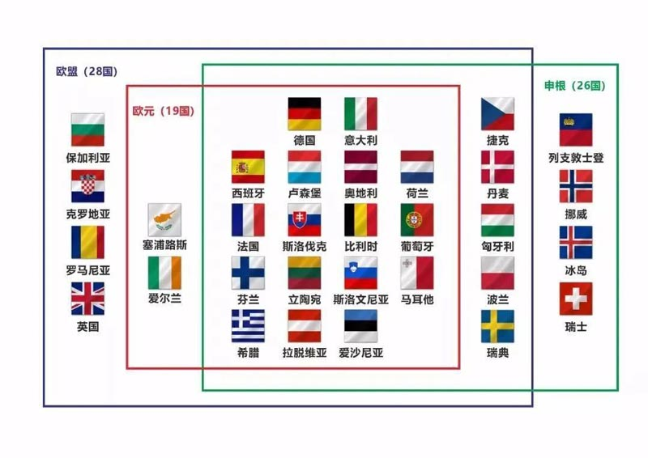

网站导航 MENU
网站首页
路线预定
旅游攻略
旅游常见问题
服务项目
联系我们
关于公司
旅游常见问题
欧盟-申根-欧元
欧洲签证
退税指南
关于国际驾照
关于景点门票
关于住宿
欧洲当地习俗
费用预算
省钱小技巧
关于小费
欧洲高速费
关于宗教
你的位置：
首页
>
旅游常见问题
>
欧盟-申根-欧元

欧洲旅行，一定要知道
欧盟，欧元，申根
这三个概念。
欧盟
为欧洲联盟简称，是一个集政治实体和经济实体于一身的组织，也是目前世界上最有影响力的组织，总部在布鲁塞尔。成员国已将部分国家主权交给组织，然而它并不是真正的国家，成员国依然是欧盟条约的最终裁决人，欧盟本身无权行使各成员国的主权。
欧盟由27个成员国家组成，1950年的六个创建国为：法国、意大利、德国、卢森堡、 荷兰、比利时。陆续加入的有：1973年英国、爱尔兰 、丹麦，1981年希腊，1986年葡萄牙、西班牙，1995年奥地利、芬兰、瑞典，2004年爱沙尼亚、拉脱维亚、塞浦路斯、斯洛文尼亚、立陶宛、匈牙利、波兰、捷克 、斯洛伐克、马耳他，2007年 保加利亚罗马尼亚。2020年1月31日英国正式退出欧盟。
欧盟作为政治和经济体，对游客没有直接的影响。游客需要了解的是申根区和欧元区这两个概念。
申根
区--申根国就是指加入《申根协定》的成员国。
1985年6月14日法、德、荷、比、卢五国在卢森堡小城申根签署了《申根协定》，公约于1995年7月正式全面生效。协定规定各国取消相互间的边境，并协调对申根区之外的边境控制。也就是说，在申根成员国中间取消边境管制，持有任意成员国有效身份证或旅游签证的人可以在所有成员国境内自由流动。申根的成员国增加到26个。奥地利、比利时、丹麦、芬兰、法国、德国、冰岛、意大利、希腊、卢森堡、荷兰、挪威、葡萄牙、西班牙、瑞典、爱沙尼亚、拉脫维亚、立陶宛、波兰、捷克、匈牙利、斯洛伐克、斯洛文尼亚、瑞士和马尔他。申根区国家中除瑞士、列支敦士登，挪威和冰岛之外均为欧盟国家，相反爱尔兰是欧盟国家，但不是申根协定的成员国。另外欧洲尚有安道尔、摩纳哥、圣马力诺（已和中国互免签证）、梵蒂冈4个既没有加入欧盟，也不是申根区的袖珍国家。这4国和邻国无实际边检，所以有申根签证抵达相应邻国后即可。爱尔兰、克罗地亚、塞浦路斯、罗马尼亚、保加利亚、5国及英国均未加入《申根协定》，入境这几个国家需办理签证。
欧元
区--欧元区是指欧盟成员中使用欧盟的统一货币即欧元的国家区域。
1999年1月1日，欧盟开始使用欧元和施行统一货币政策。但并非所有欧盟国家都在欧元区内。在申根而不在欧元区的国家有9个：捷克、匈牙利、波兰、瑞士、列支敦士登、丹麦、瑞典、挪威、冰岛。安道尔、摩纳哥、圣马力诺、梵蒂冈4个袖珍国不是欧元成员，但欧元作为官方货币并自行发行硬币。
非本国或者非欧盟成员国的外国人，而且在欧洲境内停留不超过6个月的外国居民，留学生还有18岁以下的未成年人不能退税。
在线留言